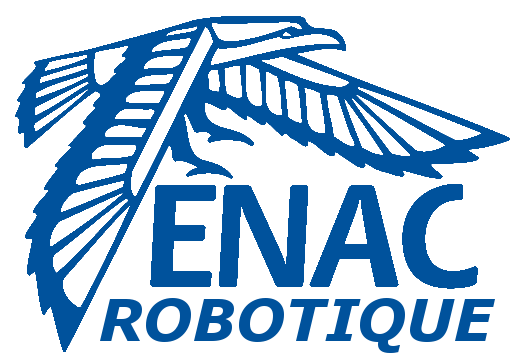
Introduction
Ce site contient la documentation du club robot de l'ENAC. Il est en cours de construction, donc très incomplet pour l'instant. N'hésites pas contribuer !
Si vous êtes nouveau, jetez un coup d'oeil à l'introduction pour des tutoriels intéressants à suivre, et posez vos questions sur le Discord !
Lorsque vous avez besoin d'aide spécifique sur l'utilisation d'un logiciel, consultez les Outils Communs
On conseille au cours de l'année de lire les **Retour d'Experience (REX) que ce soit sur la conception des robots en début d'année puis sur la coupe pour ne pas répéter les erreurs.
Ensuite, si vous avez besoin de tutos spécifiques sur certains sujets ou des clés pour se lancer, il faut consulter les petits tutos
Ou est le club ?
Le club se situe dans le bâtiment Z-008 en face de la volière drone.
L'accès y est règlementé, il faut un droit d'accès. Vous devrez donc passer par un membre du club pour y entrer en tant que visiteur ou en attendant d'avoir vos propres accès.
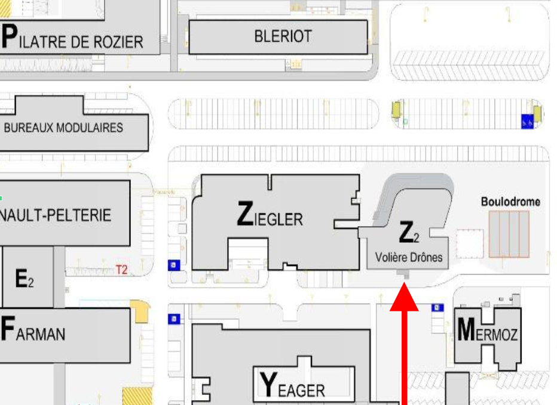
Etre membre du club
Pour faire partie du club, il faut :
-
Etre sur le Discord, c'est le point central de nos communications !
-
Remplir ses coordonnées sur le google form ici pour 2024.
-
Ensuite, il est impératif de participer à la réunion hebdomadaire du jeudi (ou de consulter le Compte-rendu si vous ne pouvez pas venir certaines fois).
-
Enfin, il ne faut pas hésiter à demander de l'aide à tout moment, que ce soit pour se lancer/se faire former, ou savoir quoi faire.
Création de comptes
Pour accéder aux outils, vous pouvez également créer les comptes au fur et à mesure de vos besoins, et demander les accès sur Discord.
- Whatsapp Si vous avez besoin de communication rapide avec les autres membres (avant/pendant/après un event par exemple)
- Github pour partager le code, les cartes électroniques,...
- Onshape pour la modélisation CAO
Répartition des tâches
1A/2A
Auparavant (de ~2015 à 2020), le club était divisé en 2 groupes, chacun faisant un des 2 robots. D'un côté les 1A et les nouveaux, et de l'autre les 2A, afin d'être généralement regroupés par affinité, emploi du temps (et les 2A étant président & trésorier). Néanmoins, cette approche est devenue compliquée en raison d'un manque de personnes pour réaliser le robot, et le fait que les 2A ont plus de compétence que les 1A ce qu'il fait qu'on refait la roue parfois.
Désormais, tout le monde travaille sur un seul même robot, et comme le font beaucoup d'équipe, les 1A se consacrent surtout sur leur formation et la réalisation de 'l'expérience', tandis que les 2A se consacrent à la transmission et à la réalisation du robot. Selon l'avancée durant l'année, on peut réaliser le second robot, calqué sur le premier avec seulement quelques variations pour ne pas perdre de temps.
Les pôles
Comme de nombreuses équipes, depuis 2022, le club s'organise en "pôle" :
- Informatique -> Programmation du robot et des outils, de la stratégie, à haut niveau, et des microcontrolleurs, ainsi que comment communique chaque choses entre eux, du réseau,..
- Electronique -> Réalisation des cartes electroniques, et programmation des microcontrolleurs avec le pôle informatique.
- Mécanique -> Réalisation modélisation et impression 3D, découpage de planches du chassis du robot, assemblage,..
Attention il ne faut pas croire que ces pôles sont indépendant , ils sont en réalité intrinsèquement liés ! Vous ferez et verrez de tout afin de comprendre la globalité des éléments en jeux,
Pour la programmation :
-
Pour ceux qui ont déjà fait beaucoup d'informatique avant, on peut se plonger assez tôt sur ce qui a été fait avant et coder soit même.
-
Pour les débutants, les premiers mois, il vaut mieux attendre d'avoir fait des cours de l'ENAC et se concentrer sur des choses simples et laisser les autres/les anciens programmer pour ne pas se démotiver et ne pas perdre trop de temps. On vous a prévu des projets tutoriels pour vous faire les mains !
Responsabilités - Organigramme
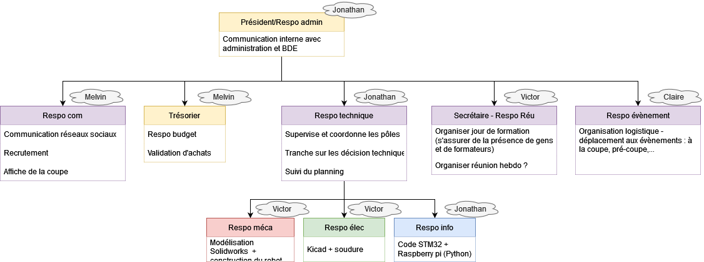 (exemple 2022)
Les responsabilité sont dispatché par rôles et peuvent varier pour chaque année. Un membre peut occuper plusieurs responsabilités. Ces postes n'engagent que notre organisation et sont indépendant des postes BDE. Par ailleurs seul les postes de président, secrétaire et trésorier comptent pour l'engagement citoyens. Il est préférable que des habitués du club occupent ces 3 postes afin de gérer le club avec l'expérience de son activité.
Achat de matériel
Nous somme dans un club technique et nous avons souvent besoin de matériel plus ou moins rapidement. Nous avons une procédure spécifique pour l'achat de matériel alors si tu as quelque chose à acheter pour le club ne te précipite pas ! Rempli ce Google form et préviens ton président ou le référent du club afin qu'ils prennent une décision. Tu peux le faire même pour ce qui n'est pas urgent afin que nous le référençons. Voici une liste non exhaustives des fournisseurs que nous utilisons, cherches y le matériel :
- Kubii
- Roboshop
- Robomaker
- RS
- Farnell
- Conrad
- Dagoma
- Amazon ( à éviter )
- Aliexpressà ( à éviter )
Consulte aussi notre liste de matériel déjà référencé.
Organisation du google drive:
Vous n'utiliserez pas beaucoupe le drive sauf si vous avez un poste à responsabilité.
- Docs -> Documents super utiles mais pas toujours bien rangés
- Coupe XXX
- Photos de l’année, Outils de communication, Dossier techniques, specs, cahier des charges, diagrammes,...
- Infos sur le club
- Graphismes
- Logo, affiches,...
- Tutos & où trouver les infos ( attention certains ne sont plus au goût du jour !)
- Archives réglement
- ARchives
- Anciens dossiers coupes
- Coupe XXX
Uniquement accessible au Trésorier, Président et Secrétaire:
- Organisation
- Trésorerie
- Membres
Introduction d'un robot
Comment réaliser un robot ?
Tout d'abord, il faut décider de quoi faire -> Il faut rédiger une sorte de cahier des charges.
Ensuite, il faut réunir la liste du matériel nécessaire, lesquels sont à commander par exemple.
Enfin, il faut établir la gestion du projet, c'est à dire savoir qui fait quoi et à quel moment pour ne pénaliser personne dans son travail, c'est à dire décider d'un calendrier de formation, de deadlines,...
Ainsi, en ordre d'idée, il faudrait idéalement que le robot roule déjà dès fin décembre, et qu'il est capable de marquer des points en février.
Exemple de timeline: 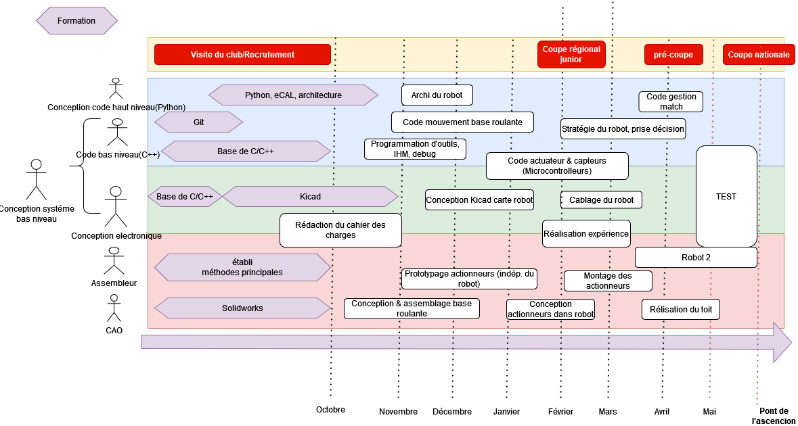
Le cahier des charges
Pour que tout le monde soit d'accord, il est impératif d'avoir un cahier des charges. Il peut être assez court (quelques pages avec photos), mais il doit contenir l'essentiel, c'est à dire identifier à partir du réglement des "fonctions" à réaliser (se déplacer, récupérer X objet, afficher le score,...) afin que tous les membres aient la même idée des objectifs à atteindre. Pour chaque fonction, il faut des critères avec une valeur de performance à atteindre. Il peut bien évidemment être modifié au cours de l'année.
Exemple de rapport avec cahier de charges pour le mini robot de formation Juin 2022
Exemple :
| Fonction | Critère | Niveau |
|---|---|---|
| Se déplacer | Vitesse max | 0.8 m/s |
| précision | +- 2 cm | |
| Accélération min | 0.3 m.s² | |
| Vitesse angulaire max | 1 rad/s |
Les specs du robots
L'idée est de recenser toutes les piéces que composera le robot (même ceux imprimés en 3D), et d'indiquer l'état d'avancement (en cours de design/de commande, en cours de test,...). Pour ceux qui sont à commander, c'est le moment de voir le prix pour avoir une idée du budget du robot. Ensuite, on peut faire l'inventaire de ce qui est nécessaire pour la carte électronique. Enfin, on peut définir comment fonctionnera le code dans les grandes lignes (quel "language" de communication entre la carte électronique et les ordis, quels fonctionalités sont impératives, lesquelles sont facultatives,...").
Un exemple de "cahier de specs" (2022)
De quoi est constitué un robot ?
Base roulante
La base roulante est tout ce qui permet au robot de "rouler" sur la table. Cela inclut les moteurs, les roues, les capteurs pour se localiser, l'électronique pour le déplacement et la localisation (à l'ENAC généralement une carte électronique assure tout le robot), et les batteries. C'est la partie essentielle du robot, à réaliser en premier. Sans base roulante fiable, on ne peut rien faire.
Les robots différentiels
Le principe de ces robots est d'avoir 2 roues (généralement centrés sur le robot), avec généralement des patins à l'avant et à l'arrière pour que le robot ne bascule pas. On envoie des consignes de vitesse individuelles à chaque moteur ce qui permet de tourner sur soit même, d'avancer, ou de faire des trajectoires courbées :
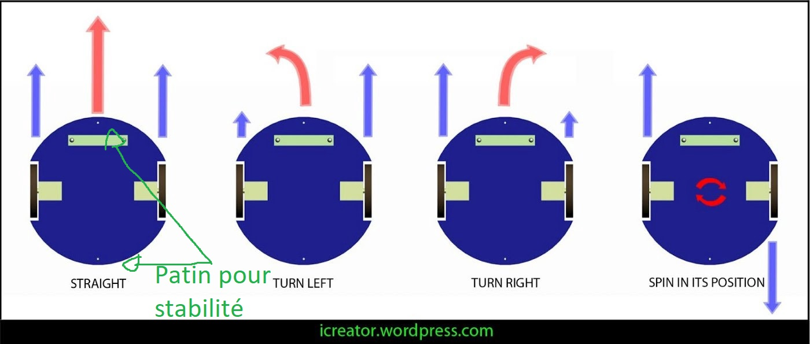
Les robots omnidirectionnels :
Ceux-ci ont la faculté de se déplacer dans toutes les directions grâce à la forme spéciale des roues.
Un exemple de gif pour un avec 4 roues :

On peut également en retrouver à 3 roues, généralement pour faire des robots triangulaires. Le seul désavantage des 3 roues est qu'il n'est pas capable de passer par dessus un obstacle, contrairement à celui à 4 roues qui pourrait. Pour tourner sur lui même, il suffit de faire tourner les 3 roues dans un sens, et pour se déplacer dans une des trois directions, il suffit de faire avancer 2 roues adjacentes (la troisième roue roule "latéralement" => Pas de frottement ) Le désavantage des robots omnidirectionnels est qu'il est plus compliqué de se repérer dans l'espace avec ceux-là (à voir partie localisation). 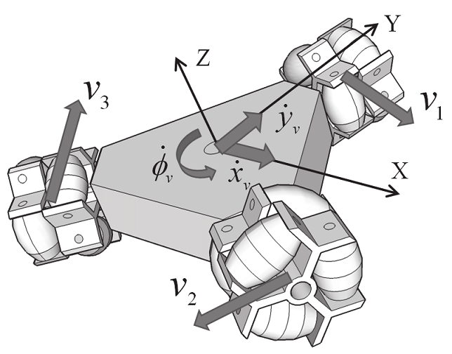
La motorisation
Des moteurs électriques, assez basique, ~12-18V, 10W grand maximum. Vérifier le couple avec le rayon des roues, le reste au pifomètre. Des outils pour calculer éventuellement le dimensionnement & les caractéristiques du moteur
Les roues
On retrouve principalement :
- Des roues en caoutchouc (classique)
- Des roues déjà faites plus exotiques (par exemple des roues de rollers) -> Peuvent endommager la table
- Faire les roues soit même en polyuréthane, avec l'intérieur de la roue en impression 3D. L'avantage est que l'on peut dimensionner la roue comme on a besoin, ça accroche mieux que la caoutchouc à la table, et ça ne fait (quasiment) pas de dégats sur la table en cas de dérapage. Parcontre il faut le mouler. Exemple de roues en 2022 sur le dropbox "Tutoriel pour réaliser les roues"
Base mécanique
Forme du robot
On retrouve principalement 4 formes possibles :
- Carrées/Rectangulaire
- ++ Pratique pour se coller à un "mur"
- -- Peu optimal pour l'utilisation du périmètre
- -- Peut facilement rentrer en collision avec quelque chose en tournant sur lui même (difficile de tourner sur lui même près d'un mur) 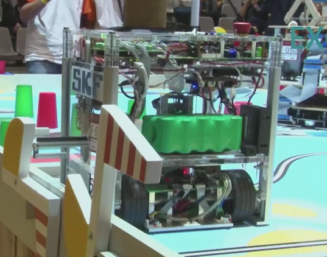
- Cylindrique
- ++ Pour le périmètre
- -- Peu optimal par rapport à ce qu'on utilise : les actionneurs, les piéces mécaniques, etc... sont généralement rectangulaire 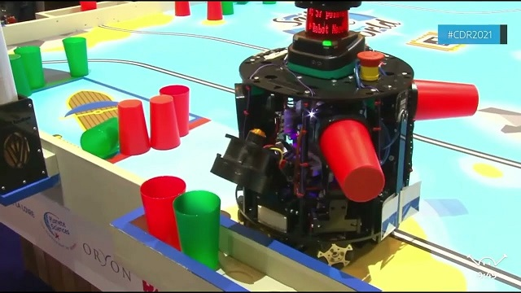
- Hexagonal (is Bestagon)
- + Pour le périmètre
- + Bon compris entre cylindre et rectangulaire pour le placement des objets à l'intérieur. 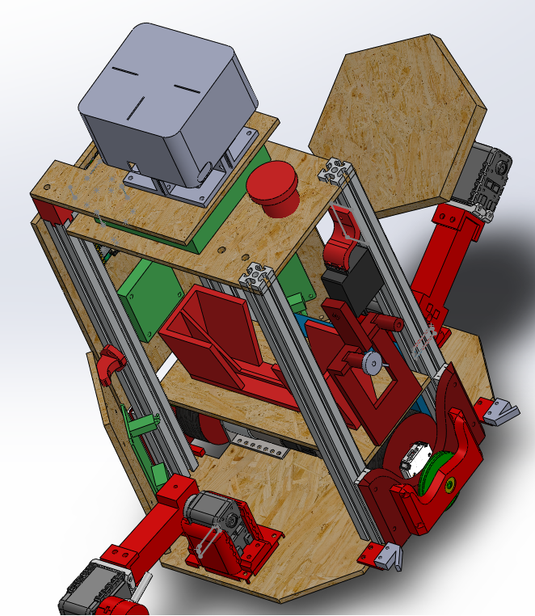
- Triangulaire
- ++ pour les robots holonomes à 3 roues
Techniques de construction
Pour construire mécaniquement le "cadre" du robot, une méthode que l'on utilise souvent au club robot est de mettre une planche à la base du robot avec les roues, 4 profilés (=poutres) en métal et une planche qui fait le "toit". Entre les deux, on peut mettre des planches verticalement ou horizontalement vissés aux profilés.
Pour les profilés :
- Profilés 20*20, M5, Ecrou en T
- Makerbeam 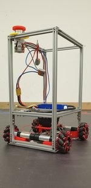
Pour les planches :
- Planches en bois
- Verre acrylique
- en métal
Capteurs
Pour mesurer certaines choses, on peut utiliser :
| Capteur | Usages |
|---|---|
| Pression | Pour les systèmes pneumatiques (Ventouses) -> savoir si on a attrapé quelque chose |
| Tension | Pour le niveau de charge des batteries, mesurer la valeur d'une résistance, ... |
| Distance TOF (Time Of Flight)/Ultrason | Permet de mesurer une distance entre le capteur et autre chose en face du capteur, en mesurant le temps que met un rayon laser à se réfléchir pour les TOF ou les ondes sonores pour l'ultrason. On peut utiliser cela pour savoir si on a attrapé un objet par exemple, si il est bien présent, pour savoir s'il y a un autre robot, ... Généralement (mais ça dépend des modèles) ils sont assez précis (1-10mm près) qu'à partir d'une distance de 1-2 cm jusqu'à 1m. |
| Couleur (ex : TCS34725) | Pour déterminer une couleur. Ne marche qu'à distance très faible (<1 cm), et il y a une led blanche intégrée pour l'éclairer. |
| Caméra | Pour faire de la vision par ordinateur -> Déterminer la position d'un objet, déterminer sa couleur, ... Mais c'est super complexe à mettre en oeuvre donc qu'en dernier recours. |
| Température | Pas d'utilité pour la coupe de robot pour l'instant mais ça existe. |
| Récepteur infrarouge, radio | utilisable pour la communication sans fil (entre robots) |
| Interrupteur | Permet de détecter si le robot ou autre chose est en "contact" physique. Par exemple, on peut en mettre sur le robot à "l'avant" pour savoir s'il est en contact avec le mur et donc si c'est le cas, on sait que la position du robot est contre un mur et on peut "recaler" sa position ainsi. |
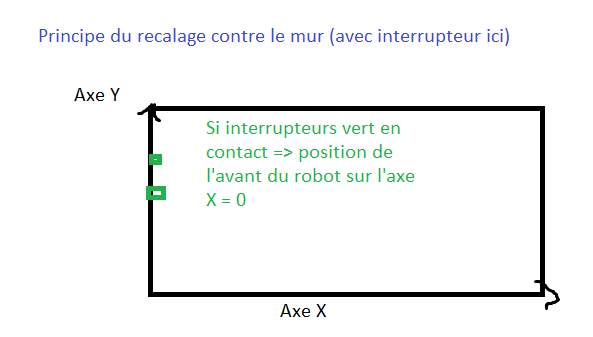
Localisation
| Capteurs localisation (exemples) | usages |
|---|---|
| Encodeur optique (AMT-102V) | Surtout pour les robots différentiels. Ce sont des dispositifs qu'on met autour d'un axe (par exemple une roue) pour mesurer le nombre de "tours de la roue". En connaissant le diamètre de la roue, on peut connaitre sa distance parcourue. Certains sont déjà intégrés aux moteurs, mais le problème est que si les roues "dérapent", les encodeurs sur le moteur ne sont pas en mesure de le détecter. On retrouve donc dans certains robots des roues "folles", qui sont juste sur un axe avec une faible résistance pour mesurer les déplacements d'un robot. 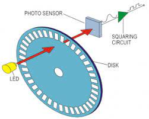 |
| Capteur optique (Souris, PAA5100JE) | Placé à distance constante du sol, il filme continuellement le sol et via des algorithmes il détermine le "déplacement" horizontal du robot en déterminant les différences entre les images filmés. La précision n'a pas encore été testé au club robot ENAC mais d'après d'autres clubs, c'est prometteur. |
| Lidar (2D)(Lidar LD06) | Le lidar est un capteur laser qui mesure sur un angle important (généralement 360°) les distances périodiquement(~10hz). L'usage principale est de détecter les adversaires ainsi. Un projet testé pour la coupe 2022 était de repérer des points fixes connus sur le terrain, et ainsi de trianguler la position du robot. Sinon on pourrait aussi le mettre proche du sol pour détecter les murets et certains algorithmes sont capable de déterminer les déplacements de cette manière. Pour info, ça existe aussi en 3D mais ça sert à rien pour la coupe et ça coute une blinde. 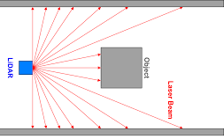 |
| IMU/Centrale inertielle/Accéléromètres | Pas testé au club robot, une centrale inertielle est un instrument, capable d'intégrer les mouvements d'un mobile pour estimer son orientation, sa vitesse linéaire et sa position. L'estimation de position est relative au point de départ ou au dernier point de recalage. |
| Vision par ordinateur (Camera/Code Aruco) | Les codes Aruco sont les sortes de QR code sur le terrain. Des algorithmes sont capables de déterminer avec une caméra leurs positions dans l'espace et donc si on en met un sur le robot, de déterminer la position du robot par rapport aux codes arucos du terrain. mais c'est complexe à mettre en oeuvre également. |
| Triangulisation | Ultrason, Infrarouge Sur les balises fixes, on peut mettre des capteurs/Emetteurs ultrason/Infrarouges et sur le robot, on peut se trianguler. |
Actionneurs
A la base de chaque "mouvement" de robot, on retrouve un moteur (mouvement de rotation). Lorsqu'on a besoin de faire certains types de mouvements, il faut faire des Transformations
Pour attraper les objets, on peut réaliser des "bras" avec un servomoteur qui déplace le bras, et au bout on peut retrouver des :
- Pince
- Ventouse (pneumatique, électrovanne)
- Pousser directement avec l'actionneur
Carte electronique
Pourquoi utiliser des circuits électroniques ? Pensez à un clavier. Vous pouvez connecter tous les interrupteurs d'un clavier avec des fils et des diodes et toutes ces jolies choses, mais vous vous retrouvez avec un merdier. Un circuit imprimé est essentiellement un foutoir de fils qui n'est en fait qu'une carte avec un câblage en cuivre d'un millimètre d'épaisseur qui est bien agencé pour permettre des connexions rapides et cohérentes sans fils, et sur lesquels on est sur que tous les composants ont la bonne alimentation/courant électrique, et les bonnes connexions pour des protocoles plus complexes entre les composants et le microcontrolleur.
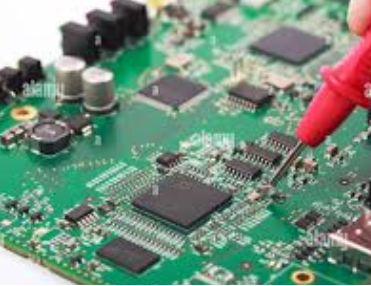
Microcontrolleur
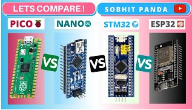
Pin disponible -> Permet de brancher plus de capteurs, actionneurs, et toute sorte de composants électroniques.
| Microcontrolleur | Capacité de calcul/RAM/Espace | Pin disponible | Réseau | prix(hors pénurie) |
|---|---|---|---|---|
| STM32 (français) | Moyen à fort | Moyen à fort (~30-60) | Pas de réseau | Pas cher |
| ESP32 (chinois) | fort à très "fort" | ~20-30 | Wifi, bluetooth | Pas cher |
| Arduino (UK) | Faible | ~10-20 | Pas de réseau | Très cher (pour les capacités) |
| Teensy (USA) | Moyen à fort | Moyen à fort (~30-60) | Pas de réseau | Cher |
Au niveau de la programmation, généralement, plus c'est simple à programmer, moins il y a de "flexibilité" pour faire des choses complexes. Ainsi, les arduinos peuvent être assez limités pour les robots. Simple à utiliser, mais dur lorsque le micocontrolleur doit gérer plein de choses.
Pourquoi ne pas programmer tout le robot sur le microcontrôleur mais qu'on utilise aussi des ordinateurs ? -> On est obligé d'utiliser des languages "bas niveau"(C, C++) et on pourrait perdre plus de temps à développer des choses avec ces languages qu'en utilisant d'autres plus simples (python,...). C'est compliqué de débugger des choses complexes, et la puissance de calcul reste limité.
Ordinateur
Raspberry pi 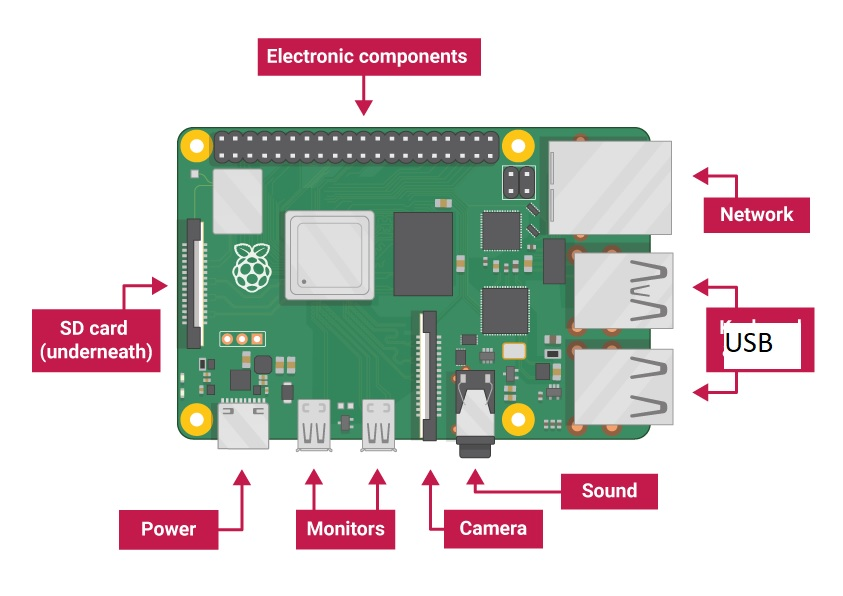
Exemple d'architecture globale :
Voici un exemple de comment relier tous ces composants : 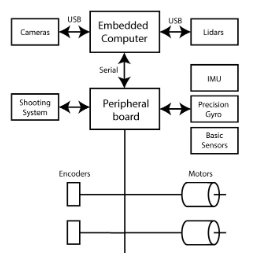
Au sommet, on retrouve un embedded computer (-> Raspberry pi), qui commande un "peripheral board" (-> Carte elec à faire durant l'année) et reliés à d'éventuels composants "gourmands" en puissance de calcul(caméra, lidar,...). Le peripheral board (qui peut être décomposé en plusieurs cates) lui est connecté à tous les autres composants électroniques.
Les batteries
On utilise cette année des batteries de perceuse (Makita, 18V), sinon des Lipo/Life de hobby king de 12/14V sont très bien. En terme de consommation électrique, en ordre de grandeur onaà 2/3 A en pic pour les moteurs, et 1/2 A pour le reste.
Bases de Python
Introduction
Si vous n'avez jamais programmés en Python, Zeste de savoir propose une bonne introduction des notions de base (communes à tous les languages), avec un TP pour appliquer directement. Le tuto devrait prendre ~8H à faire au total.
Pour les Ienacs, vous aurez des cours de python dès le premier semestre qui vous apprenent des notions très utilisé au club. Il peut être intéréssant donc de ne pas s'y focaliser dans un premier temps et d'apprendre dans d'autre pôles.
Le python au club robot
Au club robot, nous utilisons le python pour réaliser de nombreux programmes, que ce soit des scripts, des interfaces graphiques ou encore la stratégie du robot. Pour cela, il peut être nécessaire de bien découper le programme, et d'être capable parfois de traiter en temps réel des données provenant d'un autre ordinateur.
Ainsi, une vue globale des programmes que nous maitenons et développons chaque année est disponible sur tuto code - architecture globale
Introduction au C au club robot
Selon votre niveau, il faut tout d'abord à apprendre à utiliser le C en général (I), et lorsque c'est bon, vous pourrez passer au C en embarqué (II) Lien direct vers le tuto de la Carte tuto La partie I est réalisable de chez vous, la II peut être plus embêtante.
Installation
Il va falloir installer plusieurs choses :
Outils de compilation (I):
Le C est un language compilé. Sous Linux vous utiliserez g++ pour compiler votre code. Vous utiliserez également GDB pour déboguer. Ces outils ne sont pas installés par défaut sur Ubuntu, vous devez donc les installer. Heureusement, c'est facile.
Nous allons donc installer un ensemble de paquet très utile pour le développement et la compilation sur linux, il contient g++, GDB ainsi que make que vous serez ammené à utiliser plus tard.
Exécutez la commande suivante à partir de la fenêtre du terminal pour mettre à jour les listes de packages Ubuntu. Une distribution Linux obsolète peut parfois interférer avec les tentatives d'installation de nouveaux packages.
sudo apt update
Installez ensuite le paquet build-essential avec cette commande :
sudo apt install build-essential
Vous pouvez ensuite vérifier la version de gcc avec : gcc -v
Editeur de texte :
L'éditeur à utiliser est visual studio code
I - Introduction au C en général
Suivre le tutoriel de Zeste de savoir. Il contient les notions de bases et des TP pour les appliquer. Il est en Français.
Le tutoriel en entier devrait prendre une dizaine d'heures, n'hésitez pas à survoler certains détails et ne vous embétez pas à retenir, vous pouvez toujours retrouver le tutoriel si vous avez oublié quelque chose :p (On est pas en examen !). Vous n'êtes pas contraint de maîtriser ce cours avant d'arriver au club. Et bien évidement demandez de l'aide si besoin !
Par exemple, focalisez vous sur les types assez simple (int, float, char), les opérateurs mathématiques basiques, les conditions et les fonctions.
Avec la pratique vous finirez par vous souvenir de ce qui est le plus utilisé dans votre quotidiens. Il n'est pas nécéssaire de faire les section III , IV et V du cours, vous apprendrez le reste au club par la pratique.
II - Le C++ pour l'embarqué
Le C c'est bien mais c'est mieux dans le robot ! Les microcontrolleurs sont proggramé en C/C++. Vous apprendrez les notions d'embarqué au club. En attendant vous pourrez aussi lire le manuel du débutant arduino disponible au club. Il explique le fonctionnement et quelques notions de bases. Couplé à vos connaissance du C++ ce sera donc un jeu d'enfant !
III - Problématiques robots embarqué
Ultérieurement, vous pouvez voir les problématique liée à l'Asservissement sur le site de PM robotix.
(TODO)
La mécanique au club
Un robot, il faut lui donner vie ! Et pour se faire quoi de mieux que deux planches et 3 vis. Bon d'accord c'est plus complexe que ça je te le cède. Le club est un petit atelier équipé de nombreux outils qui te permettrons d'assembler toute sortes de montage et mécanisme qui constituent le robot. La plupart de nos outils ne nécéssite pas de formation spécifique. Pense néanmoins toujours à ta sécurité quand tu les utilises, si tu à un doute demande de l'aide c'est très facile de se blesser.
Nous utilisons aussi le FabLab de l'Insa qui est très bien équipé. Notamment ils ont une CNC et une découpeuse laser. L'utilisation des machines se fait facturer à la minute. Il ont aussi un catalogue de noël si vous voulez vous offrir des maquettes à titre personnel.
La C.A.O
Avant de fabriquer le robot il faut le designer. On utilise principalement la conception assistée par ordinateur (CAO ou CAD en anglais).
La CAO permet de représenter les objets en deux ou trois dimensions sur un écran.. Elle inclut des fonctions multiples comme le calcul numérique, la modélisation, etc.
Les logiciels de CAO doivent être en mesure de réaliser les tâches suivantes :
- la manipulation d'objets 2D ou 3D,
- la représentation graphique,
- le dessin de plan,
- la gestion des grands assemblages.
- la modélisation numérique,
- le calcul numérique,
Au club nous l'utilisons essentiellement pour le dessin des pièce et l'assemblage mécanique du robot. Nous ne faisons pas de calcul numérique.
Logiciels
Initialement le club utilisait Solidworks pour la modélisation 3D. Depuis la session 2023 le club cherche à migrer vers Onshape. La raison principale est qu'il a l'avantage d'être dans le navigateur ce qui rend son utilisation beaucoup plus accessible. Aucune instalation, pas besoin de windows, pas besoin de pc surpuissant. Pour les habitué de solidworks ne vous inquiétez pas, le logiciel est très similaire dans la création des pièces, il faut juste un petit temps d'adaptation. La ou il diffèr e c'est dans la gestion des versions et des fichiers mais vous verrez ce n'est rien de compliqué c'est même pratique !
Vous pouvez tout de suite commencer en suivant cette série de tutoriel sur youtube comprenant les bases de création d'une pièce et d'utilisation du logiciel.
Impression 3D
Pour le prototypage on utilise beaucoup l'impression 3D Nous avons à notre disposition une Creator Pro 2 que tu apprendra à utiliser bien évidemment! Une fois que tu auras fait ta première pièce il te faudra utiliser le logiciel FlashPrint pour rendre ton modèle 3D lisible pour l'imprimante. ( Il n'est pas nécéssaire de l'installer il est sur les postes du club ! ) Tu apprendra à tout utiliser lors des sessions de formations.
Lexique
- L'expérience : chaque année, on doit réaliser un objet à poser automatique que le robot doit déclencher. (Par exemple un phare en 2020/2021 ou une vitrine d'exposition en 2022).
- Base roulante : ce qui permet au robot de "rouler" : les roues, le moteur, le chassis, les capteurs de "positionnement", et l'électronique et le code qui va avec
Outils Communs
Au club on utilise linux pour la plupart des trucs. Il est conseillé de l'installer : Installer un dual boot.
On utilise git pour la gestion de version du code. C'est un outil magique pour travailler à plusiaurs sur un projet ! Commencer avec Git.
On utilise actuellement Visual Studio Code pour le code.
Enfin, on utilise kicad pour les cartes électroniques. Kicad
Les Ordinateurs du club on tout d'installer si vous voulez vous y essayer avant.
Installer Dual Boot Linux
Développer sous windows peut parfois être un peu compliqué, et comme d'une manière générale linux c'est mieux, on va apprendre comment l'installer sur ton ordi.
On va installer un dual boot, c'est à dire que Windows et Linux vont cohabiter sur ton disque dur, et il faudra choisir au démarrage lequel tu voudras lancer. Tu aura donc les performances maximales, mais ne pourra pas etre sur les deux système simultanément.
Il y'a de fortes chances que vous appreniez à le faire en cour d'archimat de l'ENAC lors de TP. Vous pourrez donc vous faire la main avant si vous avez peur de tuer votre ordinateur...
Préliminaires sous windows
Comme Windows n'aime pas partager, il faudra d'aboard faire quelques réglages sous Windows pour permettre l'installation de Linux à côté de celui-ci. Il est aussi plus sage de sauvegarder toutes tes données importantes sur un support hors de ton PC (clé USB, disuqe dur, ...). Je n'ai jamais eu aucune pertes de données, mais comme on joue avec les partitions de son disque dur, on n'est jamais à l'abri d'une erreur ou d'une panne de courant au mauvais moment.
- Désactiver la mise en veille prolongée : par défaut, Windows ne s'éteint pas quand on le lui dit mais rentre en veille prolongée, et ça empèche de démarrer sous un autre OS.
- ouvrir un terminal avec les droits administrateur (clic droit sur le logo windows, shell)
- entrer la commande
powercfg.exe /hibernate off
- Reconfigurer le disque en AHCI si besoin : Sur certains PC récents, les disques utilisent un mode qui n'est pas encore supporté par Linux.
- Rédémarre ton PC et entre dans les réglages du BIOS (en martelant au démarrage une touche dépendant du PC, en général F2 ou F10). Cherche la mention d'un SATA mode, et vérifie qu'il est réglé sur AHCI.
- S'il est bien sur ce mode, passe directement au partitionnement de ton disque.
- S'il est réglé sur RAID ou un autre truc bizarre (comme RPS with optane), ne le change pas, rédémarre ton ordinateur (sur Windows) et suis ce tuto ou celui-ci pour reconfigurer le disque en AHCI.
- S'il est sur autre chose, renseigne toi !
- Rédémarre ton PC et entre dans les réglages du BIOS (en martelant au démarrage une touche dépendant du PC, en général F2 ou F10). Cherche la mention d'un SATA mode, et vérifie qu'il est réglé sur AHCI.
- Partitionner le disque dur : afin d'éviter tout problème de partionnement à cause de la fragmentation Windows, il vaut mieux utiliser directement les outils de Windows :
- appuyer sur
Windows + R - saisir
diskmgmt.msc - clic droit sur le volume à partitionner (Disque 0 par exemple) et sélectionner
Réduire le volume. Si tu as plusieurs disques, par exemple un SSD et un HDD, il vaut mieux utiliser le SSD si tu peux pour des raisons de performances, mais ça marchera aussi très bien sur le HDD ! - choisir la taille de la partition désirée (Ubuntu demande 15Go minimum et recommande 25Go ; si tu as de la place tu peux libérer un espace de 60Go ou plus !)
- appuyer sur
Ton disque dur a maintenant un espace inutilisé, il est temps de l'utiliser !
Installer Linux
Il existe beaucoup de distributions Linux, et nous allons ici voir comment installer Ubuntu, qui reste simple et adapté à nos besoins. Tu auras besoin d'une clé USB (attention, la clé sera formatée).
Préparez une clé bootable
- Télécharge l'ISO de la dernière LTS : https://ubuntu.com/download/desktop
- Flash l'ISO ainsi téléchargée sur ta clé. Si tu ne sais pas faire, je te conseille d'utiliser Etcher qui permet de faire ça en 4 clicks :
- "Select Image" t'invite a choisir l'ISO que tu as déjà téléchargé.
- "Select Drive" te demande de choisir le disque à flasher. Sois bien sûr de choisir la clef USB, et pas autre chose !
- "Flash!" lance l'opération et raconte ce qu'il fait à ta clef au fur et à mesure.
- Une fois la clé flashée, redémarre ton ordinateur et entre das les réglagles du BIOS.
- Désactive le
UEFI Secure Bootqui t'empècherai de démarrer sur ta clé. - Désactive le
Fast Start-Upqui cette option existe. - Optionnel : Change l'odre de priorité pour booter sur la clé USB avant le disque dur.
- Sauvegarde de modifications et quitte le BIOS. Ton ordi va redémarrer.
- Désactive le
- Si tu as changé l'ordre de priorité du boot, l'ordinateur devrait redémarrer sur Linux. Sinon, démarre manuellement sur la clé en pressant la touche appropriée (souvent F12 ou F2).
- Sélectionne "try Ubuntu"
Ubuntu devrait alors démarrer, et tu peux le tester. Passons maintenant à l'installation !
Installation d'Ubuntu
On va d'abord créer ls partions nécessaires à Ubuntu. Il est possible de faire tout ça directement de puis l'installeur, mais je préfère le faire avant, l'interface étant plus claire !
- démarre le programme
gparted - sélectionne le disque ou tu as libérer de l'espace pour Linux
- Optionnel mais recommandé : Crée un partition de type
swapd'une taille égale à la taille de ta RAM. - Crée une partition de type
ext4. Si tu as réservé plus de 40Go pour linux, fais la d'environ 25 ou 30 Go, et crée une autre partitionext4sur la place restante. Cela permettra de changer facilement de version d'Ubuntu sans perdre de réglages ni de données. - Applique les modifications (ça peut prendre du temps), et quitte gparted.
Tout est prêt, allons-y !
- démarre l'installeur (il doit être sur le bureau).
- Lorsqu'on te demande où installer le système Linux, choisis Autre chose (ou Something else).
- Sélectionne la partion swap que tu as crées et configure la en
type: swap(ça devrait être déjà fait) - Sélectionne la première (ou seule) partition ext4 que tu as créee, et configure la en
type: ext4etmount point: /en la formatant. - Si tu as as crée une deuxième partition ext4, configure la en
type: ext4etmount point: /home. - Laisse l'emplacement du démarrage à sa valeur par défaut, qui devrait être le disque ou tu as Windows.
- Continue avec la suite de l'installation, qui devrait être assez simple, et prendre un certain temps (~20 min). Tu peut utiliser ton ordinateur pendant ce temps.
- Quand l'installation sera terminée, Ubuntu te proposera de rédémarrer sur ton nouveau système. Accepte, et retire la clé de l'ordinateur lorsque l'ordinateur est éteint.
Au démarrage du PC, tu devrais maintenant atterrir sur une interface te permettant de choisir entre Ubuntu ou Windows. Teste les deux options pour vérifier que tout marche bien.
Passes au chapitre suivant pour installer les outils courants du club.
Git
Git est un gestionnaire de version qu'on utilise pour gérer le code. Il permet entre autres de facilement collaborer à plusieurs sur un même code, ou encore de revenir à une version antérieur d'un fichier.
- se créer un compte sur Github
- donner son nom d'utilisateur à un responsable du club afin qu'il vous ajoute à l'organisation ENACRobotique
- installer git :
sudo apt install git - configurer son email et son nom :
git config --global user.name "Michel"git config --global user.email "michel.du@pont.fr"
Afin de faciliter l'utilisation de github, il est conseillé de créer une paire de clés SSH et de d'ajouter la clé publique à votre compte github. Cela permettra de pusher vos modif sans taper votre login/mot de passe à chaque fois :
- créer un paire de clés :
- ouvrir un terminal et lancer
ssh-keygen - Garder le chemin par défaut
- Ne pas mettre de passphrase pour n'avoir rien à taper lors d'un push.
- Vous pouvez visualiser la clé avec
cat ~/.ssh/id_rsa.pub
- ouvrir un terminal et lancer
- Ajouter la clé à votre compte github :
- connectez vous à Github, et allez dans vos Settings à l'onglet SSH and GPG keys
- Cliquez sur New SSH key
- Entrez un titre pour vous rappeler à quel ordinateur cette clé est liée
- copiez collez la totalité de votre clé publique (ce qui sort de
cat ~/.ssh/id_rsa.pub) - Add SSH key
- Confimez votre mot de passe
Vous pourrez maintenant cloner les dépôt github en utilisant SSH plutôt que HTTPS en cliquant sur Use SSH dans la petite fenêtre pour obtenir l'adresse du dépôt. L'adresse du dépôt devrait ressembler à ça : git@github.com:ENACRobotique/doc.git

VS Code
Editeur de texte (I et II):
L'éditeur à utiliser est visual studio code. VS code. Vous serez amené à l'utiliser aussi en cour alors il sera judicieux de l'avoir sur votre machine personnelle.
Pour installer un ".deb" sur ubuntu par exemple, vous pouvez faire :
sudo dpkg -i fichier.deb
Vous pouvez ensuite installer les extentions C/C++ et Python directement depuis VS code. Ça vous facilitera la lecture des différents codes ainsi que l'auto complétion.

Outil de compilation pour l'embarqué (II):
Une extension de VS code qui permet de compiler vers les microcontrolleurs platformio.
Vous apprendrez à l'utiliser directement au club lorsque vous aborderez le C++.
Kicad
Kicad est le logiciel nous permettant de créer des cartes électroniques.
Installez le en suivant la procédure décrite ici :
À ce jour, la voici :
sudo add-apt-repository --yes ppa:js-reynaud/kicad-5.1sudo apt updatesudo apt install kicad
Plus de détails ici (vous pouvez vérifier si : http://kicad-pcb.org/download/ubuntu/
TODO : faire un tutoriel d'une carte electronique basique
Solidworks
Le club n'utilise plus solidworks à partir de la rentrée 2023. Néanmoins si vous souhaitez apprendre à utiliser le logiciel il est disponible sur les postes du club. Nous ne l'utiliserons simplement pas pour la conception du robot sauf éventuellemnt dans certains cas très particuliers.
Vous pouvez obtenir une licence étudiante gratuite si vous souhaitez l'installer à titre personnel sur votre machine.
Vous pourrez ensuite suivre les tutoriels solidworks pour apprendre. Certains membres ont déjà utilisé le logiciels. N'hésitez pas à leur demander conseil.
Base holonome
Considérons une roue, les calculs seront identique pour les autres roues.
Rotation
Commençons par le plus simple : la rotation du robot sur lui-même. Le robotdoit simplement faire tourner ses roues à la même vitesse.
Les roues sont placées à égale distance R du centre du robot, leur axe passant par le centre du robot.
Si le robot tourne sur lui-même à une vitesse angulaire ꞷ, la vitesse d'une roue sera donc Vtr = R.ꞷ.

Translation
La roue est placée à un angle β par rapport au repère du robot. Cet angle est fixé par la construction du robot.
Supposons que le robot se déplace en translation pure à une vitesse V qui forme un angle α avec le repère du robot.
La vitesse tangentielle de la roue sera donc de Vtr = V.sin(α-β).
La roue étant en translation libre sur l'axe radial, la vitesse radiale ne doit pas être considérée.

Composition des vitesses, et décomposition selon les axes du robot
Par la composition des vitesse, la vitesse tangentielle totale d'une roue est donc Vtr = V.sin(α-β) + R.ꞷ
On connait l'identité trigonométrique : sin(α-β) = sin(α).cos(β) - cos(α).sin(β)
On peut donc écrire Vtr = V.sin(α).cos(β) - V.cos(α).sin(β) + R.ꞷ
Si on décompose la vitesse V selon les axes du robot, on a :
Vx = V.cos(α) Vy = V.sin(α)
On en déduit donc : Vtr = Vy.cos(β) - Vx.sin(β) + R.ꞷ
Forme matricielle
Pour 3 roues placées respectivement aux angles β1, β2 et β3, on aura alors :
\begin{pmatrix} v1\\ v2\\ v3 \end
\begin{pmatrix} -sin(β1) & cos(β1) & R\\ -sin(β2) & cos(β2) & R\\ -sin(β3) & cos(β3) & R \end{pmatrix} \times \begin{pmatrix} Vx\\ Vy\\ ꞷ \end{pmatrix}
Asservissement
Le principe de l'asservissement est de permettre à un moteur d'atteindre un objectif donné par "l'utilisateur" (par exemple, atteindre telle position ou tenir telle vitesse, avec un certain degré de précision et de "rapidité" )
La théorie
La bible sur les principes généraux : PM-robotix
L'implémentation
Pour réaliser un asserv en vitesse, il faut :
- Fournir des consignes vitesse au robot, par exemple en envoyant du PWM grâce aux drivers moteurs types MD10C/D13S (Exemple du code de 2022)
- Lire les données des encodeurs rotatifs, pour savoir la vitesse des moteurs Exemple en 2022, lecture software. (plus d'info sur les encodeurs)
- Prévoir une "interface" avec l'ordinateur (en serial par exemple), c'est à dire pouvoir sur le port serial envoyer les coefficients du PID et recevoir les données de l'encodeur, pour pouvoir tracer des graphes/enrengistrer les données sur l'ordinateur
- Régler l'asservissement grâce à des courbes, en envoyant des consignes depuis le PC et en voyant le résultat
- Méthode de réglage : une idée de méthode de l'UTC
{kind=link}
Pour aller plus loin pour améliorer l'asserv
Pour l'instant, on s'arretait là, mais il peut-être intéressant de tester un asserv en position directement (qui envoie des consignes vers le systéme qui asservit en vitesse), ou d'implémenter les solutions vues en dessous.
TODO Différence lecture hardware/software des encodeurs
Réglage plus fin du PID : PM-robotix
Réglage plus fin du coeff des roues : RCVA
Asservissement
Le principe de l'asservissement est de permettre à un moteur d'atteindre un objectif donné par "l'utilisateur" (par exemple, atteindre telle position ou tenir telle vitesse, avec un certain degré de précision et de "rapidité" )
La théorie
La bible sur les principes généraux : PM-robotix
L'implémentation
Pour réaliser un asserv en vitesse, il faut :
- Fournir des consignes vitesse au robot, par exemple en envoyant du PWM grâce aux drivers moteurs types MD10C/D13S (Exemple du code de 2022)
- Lire les données des encodeurs rotatifs, pour savoir la vitesse des moteurs Exemple en 2022, lecture software. (plus d'info sur les encodeurs)
- Prévoir une "interface" avec l'ordinateur (en serial par exemple), c'est à dire pouvoir sur le port serial envoyer les coefficients du PID et recevoir les données de l'encodeur, pour pouvoir tracer des graphes/enrengistrer les données sur l'ordinateur
- Régler l'asservissement grâce à des courbes, en envoyant des consignes depuis le PC et en voyant le résultat
- Méthode de réglage : une idée de méthode de l'UTC
Pour aller plus loin pour améliorer l'asserv
Pour l'instant, on s'arretait là, mais il peut-être intéressant de tester un asserv en position directement (qui envoie des consignes vers le systéme qui asservit en vitesse), ou d'implémenter les solutions vues en dessous.
TODO Différence lecture hardware/software des encodeurs
Réglage plus fin du PID : PM-robotix
Réglage plus fin du coeff des roues : RCVA
Mécanique
Conception générale
Choix des matériaux
Bois
Pas mal, mais contreplaqué de 5mm trop fin et pas assez résistant ?
verre acrylique, Impression 3D, métal
Base roulante
Motorisation
Holonome (x3 ou x4 ?), différentiel
Encodeurs
roues folles/codeuses
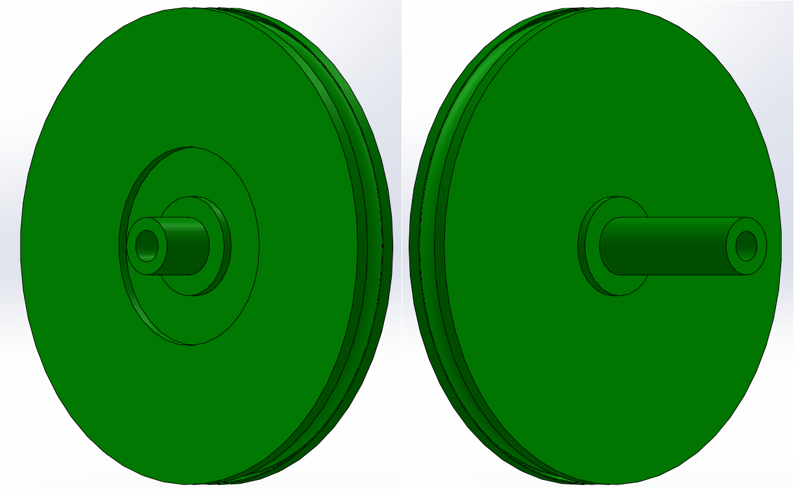
- Composition :
- Encodeur AMT-102V
- joint torique
- Impression 3D
- roulement à bille d16 m3
- rail de guidage
- (Ressort)
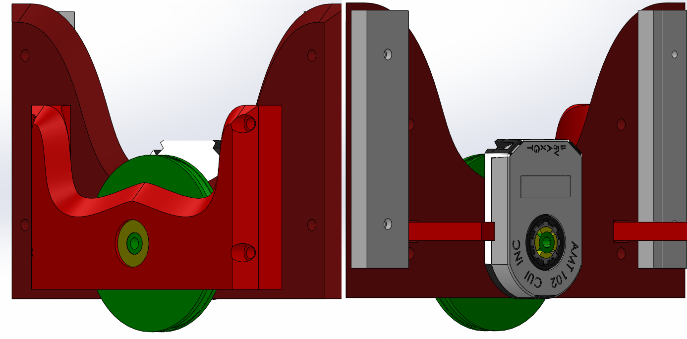
-
Les designs étaient assez compacts et évitaient de prendre trop de place sur le robot.
-
Impression 3D à éviter car trop fragile, la roue se voile assez vite.
-
Le rail utilisé étant de mauvaise qualité, on a des mouvements possibles perpendiculairement à l’axe de la roue, ce qui est totalement à éviter, et peut grandement diminuer la précision. Solutions possibles -> meilleur rail de guidage, ou mettre 2 rails
-
La rainure n’était pas assez profonde, le joint torique à tendance à se barrer avec le ressort même dans des conditions normales(on a dû mettre de la colle entre la roue et le joint).
-
Il faudrait plutôt faire usiner en aluminium la roue sur laquelle mettre le joint torique, ou acheter des roues codeuses déjà faites, ça peut coûter ~40€ la roue mais ça vaudrait le cout.
Code (C, C++)
capteurs
TCS 3472(5) :
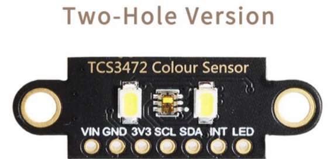 La librairie Adafruit TCS34725 a une erreur, le mauvais ID du capteur est utilisé (devrait être 0x4D) dans ADAfruit_TCS34725.cpp -> Adafruit_TCS34725::begin -> remplacer if ((x != 0x44) && (x != 0x10)) { par (x != 0x44) && (x != 0x4D)
Risque de perturbation si autre source de lumière (blanche) forte et proche du capteur Distance idéal <1cm au pifométre
Lancement d'objets (Exemples rusty - 2018)
Inventaire des systémes existants (Rusty ducks 2018)
On a déjà lancé des balles avec un moteur qui entraîne un galet, ça marche très bien.
On n'asservissait pas le moteur, donc on n'était pas super précis, mais des équipes asservissaient le moteur, et ils étaient assez précis. D'autres équipes utilisaient des petits solénoïdes avec une tige qui sort de quelques cm quand c'est alimenté, ça à l'air de bien marcher, mais on n'a jamais trouvé les bon trucs (on n'a peut être pas beaucoup chercher).
Et d'autres équipes font avec des turbines, on n'a jamais fait non plus, principalement car on n'en n'a pas au club.
Systéme en action chez les rusty
Axes d'amélioration
Avec des moteurs brushless, on peut obtenir des meilleures performances car un brushless ça se rapproche plus d'un moteur pas à pas que d'un moteur DC. Donc il est contrôlé assez précisément en vitesse, et ça ne va pas changer suivant la tension de la batterie (sauf si tu arrive à la limite max de rotation). Mais pour compenser le probléme du moteur dépendant de la tension de batterie, on peut mettre un régulateur de tension entre les deux.
Mais il n'y a pas que ça : quand tu envoie la balle et moteur ralenti. Donc soit tu as assez de puissance et d'inertie pour que le moteur ai retrouvé sa vitesse initiale avant que la prochaine balle n'arrive, soit il faut envoyer les balles les unes après les autres, doucement. C'est ce qu'on faisait.
Systéme en action pendant la finale chez robotech
Présentation robotech du systéme
Explication robotechs de leur robot 2018
Petits Tutos
Il y aura dans cette section des petits tutos sur des sujet divers et variés, qui ne méritent pas un chapitre entier.
Ressources en ligne
En général
De nombreuses ressources en ligne existent déjà, parmi lesquels on peut noter :
- WIki Eurobot wiki officiel pour la coupe de france de robotique, encore assez peu complet
- VRAC, Une compilation de tutoriels par "section" (moteurs, odométrie, ...) ciblant les spécificités de la coupe de france
- Game Manual, ANGLAIS, un gros "wiki" pour la compétition de robots FIRST (USA), assez similaire à la coupe de France mais en plus bourrin
- En particulier, les sections :
- Design Skills, pour la mécanique
- Hardware components, Tips and trick pour la mécanique
- Common Mechanisms, pour de l'inspiration
- Pour les roues folles/codeuses holonomes, Dead Wheels
- Electronics and components pour certaines choses
- Programming Concept pour la partie code (le reste est relativement spécifique au Java donc pas trop utilisable)
Pour le code
- Road Runner, une librairie de code en Java pour programmer des robots holonomes, qui peut servir d'inspiration
- Des tutoriels sur l'asserv sont disponible dans le REX Asserv
- DEs conseils sur les déplacements et autre des pm-robotix
Sommaire de la section
Commençons par apprendre comment mettre en oeuvre une raspberry pi !
Problème lors du branchement d'une carte pendant quelques secondes : /dev/tty_xxx: Périphérique ou ressource occupé. Résolvez le problème !
| Tutoriel | Méca | Elec | Info - C | Info - Python |
| Les différents microcontrolleurs | | X | X | |
| Le simulateur et les IHM (2022-2023) | | | X | X |
Pôle informatique
Bienvenue sur les tutos d'introduction pour le pôle informatique !
La partie C/C++ peut être fait à tout moment. Idéalement, pour la partie Python, si vous n'avez pas de connaissances en informatique, il vaut mieux attendre en novembre/décembre d'avoir fini les cours enac de Python.
Raspberry Pi
La Raspberry Pi est un petit ordinateur monocarte que l'on va embarquer dans certains de nos robots.
Graver l'image
Pour commencer, il faut télécharger une version récente de Raspbian, la distribution officielle pour la Raspberry Pi. Sachant qu'on va l'utiliser sans jamains brancher d'écran, il vaut mieux prendre la version Lite, bien plus légère.
Il va falloir graver cette image sur une carte SD. Pour cela, utilisez Etcher, qui est très simple d'utilisation et marche très bien.
Une fois l'image gravée, ne vous précipitez pas. Nous allons modifier quelques fichiers de la carte SD afin de faciliter la configuration.
Pré-configuration
WiFi : On va faire en sorte que la raspi se connecte directement au réseau WiFi du club.
Éditez le fichier <carte SD Raspi>/etc/wpa_supplicant/wpa_supplicant.conf (les droits d'admin seront sans doute nécessaires), et ajoutez le texte suivant (en remplaçant lemotdepasse par le mot de passe, bien entendu) :
network={
ssid="robot"
psk="lemotdepasse"
}
SSH : Pour activer le SSH sans brancher un écran et un clavier, créer un fichier ssh dans la partition boot (celle formatée en FAT). Les identifiants par défauts sont :
utilisateur: pi
hostname: raspberrypi
password : raspberry
Il est mainteant temps de démarrer la Raspberry Pi !
Configuration, la suite
On va donc démarrer la Raspberry Pi en l'alimantant soit par l'USB (solution la plus simple), soit par les broches GND et 5V (seulement si vous savez ce que vous faites !).
Elle devrait automatiquement se connecter au réseau WiFi. Vous pouvez tenter un ping raspberrypi, ou chercher son adresse sur l'interface du routeur.
Quand vous avez trouver, s'y connecter en SSH : ssh pi@raspberrypi, ou ssh pi@192.168.XXX.xxx.
sudo raspi-config : changer le hostname, rebooter. (autre choses ?)
UART : On va certainement utiliser l'UART de la raspi. Sur la Raspberry Pi 3 (et peut être aussi d'autres modèles), il faut modifier la configuration pour pouvoir l'utiliser (source).
Ajouter cette ligne au ficher /boot/config.txt : dtoverlay=pi3-disable-bt.
Dans le fichier /boot/cmdline.txt, supprimer console=serial0,115200.
Quand la raspberrypi sera démarrée, vous prendrez soin de vérifier que serial0 -> ttyAMA0 et serial1 -> ttyS0 en faisant un ls -l /dev/serial*.
Il est peut-être nécessaire d'aller activer l'UART dans sudo raspi-config. À vérifier.
Pour tester que ça marche : connecter RX et TX ensemble par un câble de breadboard, ouvez minicom minicom -D /dev/ttyAMA0, et taper des trucs. Si les caractères s'affichent c'est que ça marche. Si vous débranchez le fil ça ne devrait pas marcher. Pour quitter mninicom : CTRL+A, q, ENTER
Quelques packets à installer :
git: gestion de version,python3-pip: gestionnaire de modules python3,minicom: moniteur port série,vim: coloration syntaxique et clavier pour humain, pour l'éditeur de texte vi. Pour sortir : échap, puis:q, ou:q!si ça veut pas.
sudo apt install git python3-pip minicom vim
Quelques modules python que l'on va souvent utiliser :
pyserial: pour uiliser un port série,ivy-python: pour communiquer avec Ivy,bitstring: pour convertir des nombres en bytes et inversement.
Simulation et IHM
- Robokontrol
- Afficher la position du robot sur la carte
- Ctrl actionneurs
- Bouger robot (pos,vit)
- eCAL (monitor, recorder, player)
- Rejouer les données
- Afficher les msg
- Graphe en fc du tps
- robot_sim_ecal (en cours de création)
- Bouton+slider dynamique(scripter, avec délai)
- Afficher LIDAR
- Afficher etat du robot
Se débarasser du "périphérique occupé" lors du branchement d'un device
Le responsable de ce bazar, c'est ModemManager, un service qui permet de contrôler les périphériques mobile 2G/3G/4G. Plus d'infos.
On va faire en sorte qu'il blacklist tout les péiphériques tty*.
D'abord on exécute la commande sudo systemctl status ModemManager.
Voilà un exemple de sortie :
● ModemManager.service - Modem Manager
Loaded: loaded (/lib/systemd/system/ModemManager.service; enabled; vendor preset: enabled)
Active: active (running) since Fri 2019-11-15 15:42:25 CET; 13min ago
Main PID: 6815 (ModemManager)
Tasks: 3 (limit: 4915)
CGroup: /system.slice/ModemManager.service
└─6815 /usr/sbin/ModemManager --filter-policy=strict
Ensuite on va éditer le fichier indiqué à la ligne Loaded :
sudo vi /lib/systemd/system/ModemManager.service
A la section [Service] du fichier, rajouter une ligne :
[Service]
...
Environment="MM_FILTER_RULE_TTY_ACM_INTERFACE=0"
Enfin il faut recharger la configuration de systemctl et redémarrer le ModemManager:
sudo systemctl daemon-reload
sudo systemctl restart ModemManager
Source : https://askubuntu.com/a/1119498
Tutos elec
L'elec de base c'est pas sorcier, mais on peut pas l'inventer ! Alors voilà quelques petits tutos en rapport avec l'elec, notamment des schémas pour les circuits les plus courants.
Commencez donc par allumer une LED !
la LED
TL;DR; Prends entre 300 et 400 ohm.
La led, c'est la base. Il faut toujours avoir une LED sous la main. Alors commençons direct :
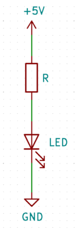
- Le premier "composant" (la flèche vers le haut) représente une source de tension continue (on ne travaille qu'en continu).
- Le 2ème est une résistance
- le 3ème une LED
- le dernier, la masse (point où potentiel vaut 0V)
Comme au collège, on suppose que le potentiel est constant le long d'un fil.
La LED est un semi-conducteur qui ne laisse passer le courant que dans un sens, de l'anode (le haut dans ce schéma) vers la cathode (le bas).
Elle a une tension de seuil en deçà de laquelle elle ne s'allume pas. La résistance est absolument nécessaire afin de ne pas griller la LED, où le système qui l'alimente !
Calculer la résistance
Pour calculer la résistance, nous devons connaître la tension d'alimentation (ici 5V, nous l'apellerons Vcc), la chute de tension aux bornes de la LED Vd, et le courant que nous voulons faire passer dans la led i.
Admettons pour l'exemple que la chute de tension au borne de la LED soit Vd=1.6V, et nous voulons faire passer un courant de i=10mA.
- on calcule d'abord la tension au borne de la résistance (loi des mailles):
Vr=Vcc-Vd(donc ici: Vr=3.4V) - on calcule ensuite la résistance avec la loi d'ohm (U=RI):
R=Vr/i(donc ici: R=3.4/0.01, R=340 ohms)
déterminer les paramètres
C'est bien tout ça, mais comment on trouve Vd et i ? La réponse se trouve dans un document appelé la datasheet.
Ce document existe pour tout les composants électronique, et il faut le consulter avant d'utiliser un composant.
Pour des composants "standards", il n'y aura pas besoin de tout lire, on pourra se concentrer sur quelques infos précises.
Voilà une datasheet pour une LED : https://www.vishay.com/docs/83171/tlur640.pdf.
Quelques indices pour lire une datasheet :
- En haut à doite, il y a généralement le nom des composants décrits par la datasheet.
- Ensuite, il y a un desciption synthétique du composant. C'est rapide et facile à lire, et il y a beaucoup d'infos intéressantes, donc c'est à lire !
- Il y a généralement une section "Absolute maximum ratings". Si vous dépassez les valeurs données ici, vous allez à coup sûr griller le composant. Il ne faut jamais atteindre ces valeurs. Cette partie sert à savoir rapidement si le composant peut convenir pour notre cas ou pas.
- Le reste de la datasheet contient toutes les infos nécessaire, c'est là qu'il faudra chercher.
Par exemple ici, dans les Absolute maximum ratings, le premier paramètre est "Reverse voltage => 6V". Ça veut dire que si vous branchez la LED à l'envers sur une alimentation de 6V ou plus, la LED va griller très rapidement. Plus intéressant pour nous, DC forward current 20mA. On sait donc qu'il faudra fixer le courant à moins de 20mA.
Pour une LED, on va chercher le courant qu'on va faire passer. C'est pas toujours très clair à trouver, mais ici, un gros indice est le fait que beacoup de "test condition" prennent If = 10mA. C'est bien inférieur à 20mA, donc on va choisir ça.
Ensuite, il faut touver le forward voltage correspondant à ce courant. On peut le lire, assez difficilement grâce à la figure 4: "Forward current vs. Forward Voltage". Pour If=10mA, on trouve environ Vf=1.8V.
On peut donc refaire notre calcul de résistance: R=(5-1.8)/0.01 donc R=320 ohm
Arduino, ESP32, Teensy, STM32
Tutos code - architecture
Introduction au code robot
Pré-requis : Bases du python (fonctions, classes, boucles, ...), Git
Voici les outils "principaux" qu'on peut retrouver dans tout le code d'un robot, et avoir une notion de base sur chacune des choses peut-être utile.
Le déplacement du robot / Asservissement
Voir Asservissement - REX, et en particulier le tuto de PM robotix.
Photo volé du tuto de PM robotix : 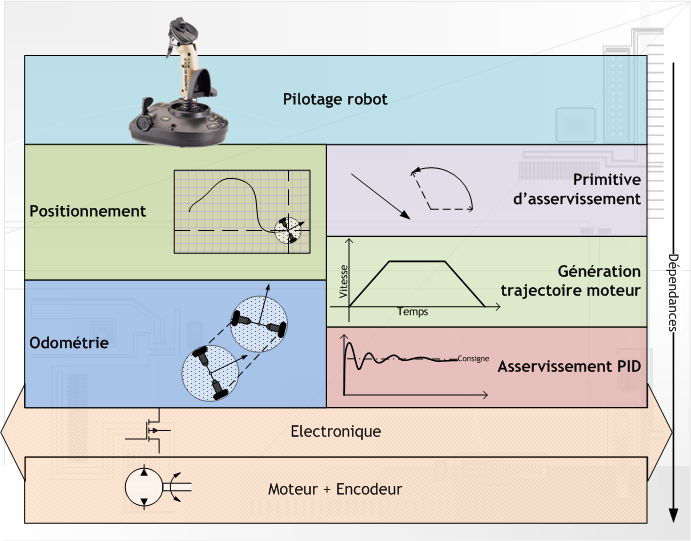
Capteurs/Actuateurs
State machine
Communication inter-programmes
Liaison série
Topics, Publisher, Subscriber - exemple eCAL
Simulateur python - eCAL
Utilisable pour tester des (recherches de chemins, Pure pursuit, )
Visualisation des données
Le code du robot est assez complexe, voici un schéma récapitulant globalement son fonctionnement :
(Exemple mi 2022, pas très clair) :
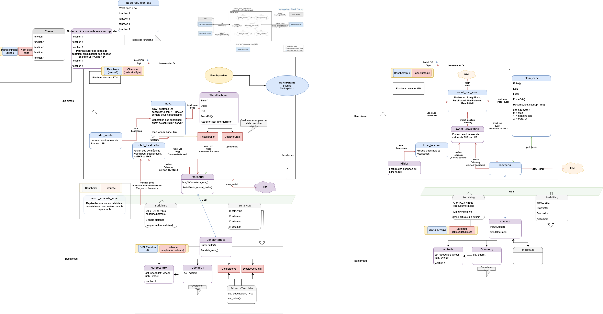
Le principe est de découpler certaines parties du robot : ...